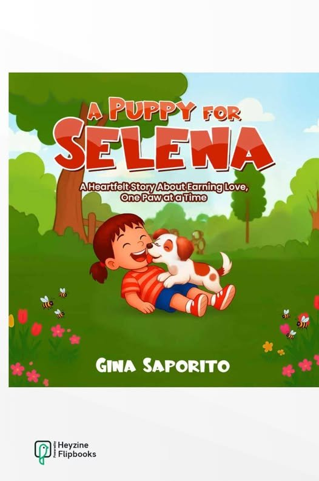
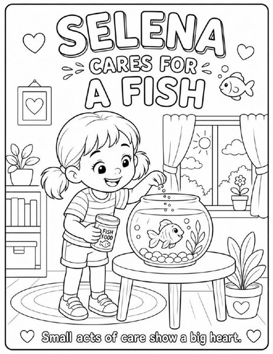

Companion
A Puppy for Selena — Coloring Book
A hand-illustrated coloring companion to the picture book. Follow Selena and her puppy through every little act of love and care.
Find on Amazon →Stories inspired by family, love and imagination
Heartfelt picture books from Gina Saporito and Little Saporito Press — gentle stories that celebrate kindness, courage, and comfort.
The Selena Stories
Follow Selena and her animal friends through sweet, relatable lessons about love, patience, and care.

A heartfelt story about earning love, one paw at a time.
Selena dreams of having a puppy of her very own — the walks, the cuddles, the endless love. But first, she’ll have to prove she’s ready. With determination and a gentle surprise along the way, Selena learns what it really means to love and be loved in return.
A hand-illustrated coloring companion to the picture book. Follow Selena and her puppy through every little act of love and care.
Find on Amazon →Book 2 in The Selena Stories — another gentle adventure with Selena, Buttons, and a new friend, Sunny the hamster.
Be the first to know →Reader love
Early reviews from A Puppy for Selena on Amazon.
“Very cute book about a little girl named Selena, trying to prove that she is responsible enough to get a puppy. It has a good, easy to follow story with simple lessons that children can easily understand. My nieces who are three and five years old absolutely loved it, especially because the drawing of the puppy looks just like my dog. Highly recommend this book.”
“Such a sweet story about a beautiful friendship between a girl and her pup. Big hit with all the kids in my life! I hope there’s a sequel someday!”
Read more reviews on Amazon.
A little gift
Bring the world of A Puppy for Selena home. Print, color, share — on us.

14 hand-illustrated coloring pages following Selena and her puppy through every little act of love and care.
Download PDF7 printable bookmarks featuring Selena and her puppy, each with a gentle reminder about love, patience, and care.
Download PDFEnjoying these? If they brought a smile to a little one in your life, consider leaving a tip to support Little Saporito Press. Every bit helps us keep making free things for kids.
Support the pressTips go directly to Gina. Free printables stay free, always.
About
Gina Saporito is a proud parent and grandparent whose biggest joy is watching her granddaughter, Selena, explore the world with awe and amazement.
She is the founder of Little Saporito Press, where she creates heartfelt stories for young readers and families. Gina writes gentle picture books that celebrate kindness, courage, and comfort — stories that invite children to feel seen, safe, and loved.
When she is not writing, Gina enjoys creating book projects that bring families together.
The heart behind the press
The heart behind Little Saporito Press is to create stories that are gentle and comforting to a child.
I want every book to feel like a safe place — a place filled with love, kindness, and the reminder that they are never alone.
— Gina Saporito, founder
Stay in touch